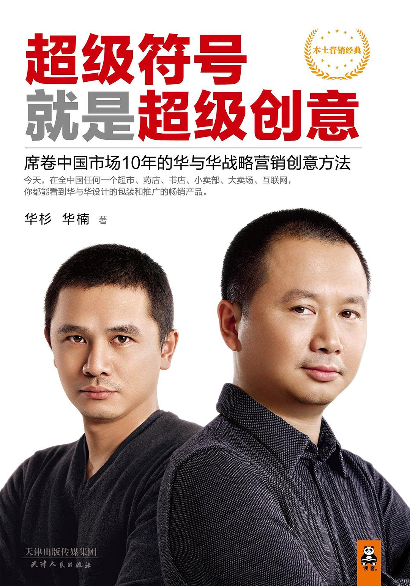

注：【】部分为笔者心得，非原文摘抄。
- 符号定义商品，商品符号定义人。
- 符号是指一切具有携带意义的视觉形象、听觉符号、触觉符号、味觉符号和嗅觉符号。
- 商品蕴含着消费价值，符号揭示和强化这一价值。
- 营销传播的目的是通过影响消费者的观念和行为，促使他做出购买商品的行动。
- 符号的功能：
- 指称识别；
- 信息压缩；
- 行动指令。
- 研究符号，就是谋求将记忆碎片中最小的一片，打造成一个品牌符号，并达到三个效果：
- 每个人记得的都是同一片；
- 一记就牢，不容易忘记；
- 能装载品牌的身份及价值，实现零损耗传播。
- 超级符号是人人都看得懂的符号，并且人人都按照它的指引行事的符号，人们甚至都不会去思考它为什么存在，只要一看见这个符号，就会听它的话。
- 包装是最大的媒体，包装是品牌最重要的战略工具。
- 一般来说，品牌符号还是遵循视觉第一的原则。
- 视觉符号的选择，标准是过目不忘；听觉符号的选择，标准是耳熟能详。
- 视觉设计成功的关键，也在于要做有听觉的视觉，也就是可描述的视觉，能说出来的视觉。
- 符号刺激，一定要得到价值记忆和行动反射，没有价值，没有行动，盲目的刺激，就是干扰。
- 在完成全面媒体化的自媒体工程之前，不要考虑投放媒体广告的事。
- 视觉符号不单是品牌标志，更重要的是产品设计的符号性。
- 符号的意义在于降低品牌的成本——被发现的成本和被记住的成本。
- 在设计问题上，还要注意“不要内涵导向，要外延导向”。
- 讨论设计的出发点不是说这个设计是怎么来的，而是这个设计能带来什么效果。
- 具象的形象比抽象的形象有更大的传播力和商业价值。
- 品牌超级话语说动消费者，不光是消费者听到这句话后会做出购买行动，而且，他还愿意传播这句话给别人。不光是消费者愿意把它传达给别人，而且，我们的员工会自动自觉地随时把这句话挂在嘴边。
- 传播是一种口语现象。
- 只有播，没有传，那就没用。
- 广告语不是一句商家说的话，而是替消费者设计一句他要说的话。
- 多使用“顺口溜”的形式，因为这才是人类数万年的原始本能！
- 口语套话离人类的心智模式最近，这是传播最深刻的本质。
- 超级话语要陈述句和行动句，要直接陈述事实和要求行动。
- 不思而得，脱口而出，是创作的最高境界。
- 一个社会制度如果不允许个人自由发展，这个社会制度就会崩溃。
- 全球化就是在每个市场都能本土化，而不是在每个市场都机械的一致。
- 品牌要商标，产品命名就不要考虑商标了，就用通用词汇，不是在商标局注册，而是在消费者心中注册。
- 如果你能把价值做进名字里，就不要把它放在口号上。
- 品牌的本质是降低企业的营销成本、消费者的选择成本、社会的监督成本。
- 社会对企业的监督管理，不是靠政府、政策来集中、来管理，是靠市场竞争来优胜劣汰，品牌是市场秩序和消费安全的第一道防线。
- 谁能降低消费者的选择成本，谁就能降低自己的营销成本。
- 包装设计的性质，不是设计这个包装，是设计整个货架。
- 总是希望得到竞争对手的尊重和承认，而不在意顾客的尊重和承认，是普遍的思维误区。
- 产品是最大的媒体，是企业可以百分百把握的自媒体。
- 包装设计是最大的营销策划。
- 口号要传达品牌价值，要让人行动。
- 将自己的品牌植入自己的广告语。
- 华与华方法 15 秒电视广告的创作标准：
- 让人记住品牌叫什么名字；
- 让人记住商品长什么样子；
- 给人购买理由和冲动；
- 建立品牌符号和企业战略优势。
- 一切广告，一定以产品为主角。
- 平面广告要提供给消费者足以直接作出购买决策的信息，提供导购指南，而不是止步于仅仅引起注意，那是户外广告牌的事。
- 出事不是丑闻，掩盖才是丑闻。
- 企业通过建立品牌，创造重复博弈，给消费者惩罚企业的机会。品牌是保护消费者利益的风险机制，当品牌犯错的时候，如果消费者能惩罚它，则品牌生效；如果品牌逃避惩罚，则风险机制失效，品牌失灵。
- 任何企业得以生存，都是因为它满足了社会某一方面的需要，实现了某种特殊的社会目的。——彼得·德鲁克
- 企业战略不是企业的战略，而是企业为承担某一社会责任，解决某一社会问题，而为社会制定的战略。
- 重新定义企业社会责任：不是企业的义务，二是企业的业务。
- 制定企业战略，最有远见的思维方式，就是从思考我为社会解决什么问题开始。
- 找到永远完不成的使命，永远完不成，又永远需要人去干的事，就找到了永续经营的逻辑。
- 重新定义公关：公关是企业的社会服务产品。
- 制定战略，就要确立在哪个领域，我们如何能够持续地保持先进的生产力。
- 企业要成为社会某一方面的首席知识（咨询）官。
- 每个企业都要学会提供咨询产品给顾客，虽然这些咨询产品不能直接实现回款，但却是企业至关重要的战略产品，是留住顾客、扩大生意的法宝。
- 产品体验是一个黏性，知识依赖是更广泛更深刻的黏性。
- 把“让企业成为可信赖的专业发言者”作为一个长期的战略来规划实施。
- 一流的企业都代表了人类在某一方面追求的梦想。
- 对企业生存发展最本质的认识：今天的一切都是过去作对了事带来的，如果今天没有对未来做对事，明天就会失去生存能力。
- 变革，不能靠危机倒逼，要在日子最好过的时候搞。
- 结果导向的思维是不完整的，因为结果在到来之前，只是一个假设。果的决定因素是因，种什么因，得什么果。因果就包含了结果。结果导向倾向于要求别人，因果导向更关注于检讨自己。
- 把决战目标称为战略，把达到这一目标的一系列会战成为路线图，这就是整个战略计划。
- 战略路线图就是：
- 定义我们的棋盘：企业社会责任和使命，要解决什么问题；
- 设计业务组合和产品结构，这是该社会问题的解决方案；
- 决定进入和开展哪一块业务的先后次序；
- 依次开展业务；
- 完成全品类覆盖。
- 产品结构，涉及三个层次的问题：
- 产品结构，要开展哪些业务，哪些产品；
- 每一个产品扮演的战略角色和承担的战略任务；
- 推出的战略次序。
- 企业的生存是社会的选择，选择的标准，就是能帮助社会达到目的。
- 企业战略不是上层建筑，而是植入企业的每一个行动中，让每一个行动，都具备战略价值、战略意义，都能够积累战略资产、竞争壁垒。
- 企业战略制定的框架：
- 企业政策，即我们对社会、对消费者的政策，承担的社会责任和义务；
- 战略路线图；
- 大战术，企业独特的经营活动方式，包括核心技术、生产方式、营销模式等等；
- 企业资源，对资本、人力等资源调动艺术的运用；
- 流程、预案和工具箱，针对某些情况，制定方法、流程和标准去解决问题。
- 竞争的本质在于盯住顾客，不在于盯住对手。
- 竞争，不是我要跟你争，而是我要让你没法跟我争。
- 人性的弱点，就是总盯着谁抢了他的饭碗，不盯着谁给了他饭碗。人们总是忽视爱他的人，而跟恨自己的人斗得火热。
- 军事战略和企业战略有一个本质的区别，军事战略有敌人，企业战略没有敌人。军事战略是在一个有限的地理空间里争夺土地，企业战略是在一个无限的市场空间里创造价值。
- 每个企业，本质上都可以自己定义一个行业。
- 华与华的非竞争论：
- 盯住顾客比盯住对手重要；
- 企业社会责任导向，盯住社会比盯住市场更本质。
- 没有创新，就没有经济发展。
- 只有创新，才有利润。没有创新，竞争的结果就让你没有利润。
- 资本家根本得不到利润，提供资本的人，如果不承担风险，那他只能得到利息，承担风险呢，能得到投资回报。——约瑟夫·熊彼得
- 在经营业绩最好的时候，就要着手布局下一轮创新，否则，企业随时会被淘汰。
- 当你发现市场变化的时候，那是别人已经创新了。
- 产品的本质是购买理由，产品开发就是营销创意。
- 反对将广告分成品牌广告和产品广告两个层次，企业的每一个动作都是品牌动作，没有品牌广告、产品广告之分。
- 顶层设计思维：顶层不是高于所有层的那一层，而是植入进每一层的那一层。
- 先做广告创意，再做包装设计。
- 从传播的角度去进行企业战略设计、品牌设计和产品开发。
- 调研的目的：
- 决策参考；
- 创意启发。
- 调研的关键就是要了解消费者的故事，故事里有时间、地点、过程、情绪。
- 【以用户画像来替代消费者调研。】
- 对产品的策划、营销的策划，就是编写消费故事的剧本，如果你脑子里没有故事，只有数据，你就什么都不会，更何况，数据大部分还是错的。
- 稀缺的不是报告，稀缺的永远是创意，最后都要靠创意来解决问题。
- 认知决定行为。
- 调研的关键就在于，你需要消费者回忆场景，不要让他帮你做总结。
- 在一般情况下，人只愿意讲述对自己有利或被社会所喜欢的动机，而隐瞒对自己不利或社会不喜欢的动机。行为的内心动机不可能毫无阻碍地表露出来。
- 和被访者深入访谈，并通过这种深入访谈和行为过程的互相印证，真正地了解消费故事。
- 人们买一件东西并不需要相信，他只是对你的承诺感兴趣，就愿意试一试，相信是使用之后的事情。
- 千万不要做价格测试的调研，只会给企业误导。
- 决策和创意的责任在企业，不在消费者。但很多对消费者的调研，都把调查消费者变成了问计于消费者。
- 华与华方法，创意测试四大问题：
- 是谁？
- 他要你做什么？
- 你做不做？
- 为什么？
- 宿营和行军都是战斗的一部分，而不是战斗的间歇或准备阶段，行军甚至是战斗最重要的部分。
- 所有调研都是主观的。
- 调研是在任何时刻都不能停止的工作。
- 最大的调研，就是生活的积累。
- 后工序决定前工序。
- 语言的产生，是一边玩一边制定规则；语言的使用，是一边玩一边修改规则。——路德维希·维特根斯坦
- 站在消费者的角度，就是置身于消费的语境，进入消费者的角色。
- 消费者的四个情景语境是：
- 购买前；
- 购买中；
- 使用中；
- 使用后。
- 把受众从迷茫中唤醒过来，这是沟通的第一要义。
- 最高效率的沟通，是激发受众的本能反射。
- 就是要在第一秒让他发现，你要说的话和他有关，这是最关键的，也是最高效的。你要找到他最能反射的那个点、那个词，然后选择你要他反射的那个点、那个词。
- 受众不会深究你的广告，因为他身边的任何信息都比你重要。
- 知名度永远都不够！
- 宣传的力量来源于重复。
- 永远不要想消费者忠于你，反过来，是你时刻要忠于你的消费者。
- 购买者的核心特征是置身于购买环境中的信息搜寻者。
- 决胜终端，在以下几点决胜：
- 产品包装是最大的媒体；
- 用符号刺激购物者的本能反射；
- 把货架当成广告位用；
- 把包装文案做成导购指南；
- 让产品自己会说话，让包装成为导购员；
- 包装设计创造陈列优势；
- 用产品结构占领更大柜台，创造更多销售机会。
- 和购买者的沟通，必须是严肃而快速的。严肃是因为掏钱是很严肃的事，快速是因为留给你影响他购买决策的时间很短。
- 购买并不是结束消费，消费者还会使用它。使用的本质是体验，消费者的使用体验将决定品牌的最终命运。
- 营销传播创意，必须深入研究消费者作为体验者的行为和体验。
- 服务业的体验经济方法论把消费分成三段：
- 来之前，制造期待；
- 来之中，制造惊喜；
- 走之后，值得回忆、乐于谈论。
- 乐于谈论是营销创意的一个超级重点，甚至是一切广告创意的出发点。
- 在营销中不仅有消费者利益、企业利益，还有销售者利益，只有这三者利益都满足，才能够成营销行为。
- 影响价格最大的因素：第一是你想卖多少钱；第二是你选择哪些销售者以及如何和他们分配这些钱；第三是是你如何让消费者同意你的产品值这么多钱。
- 简单地说，营销包含两件事：
- 让消费者向我们买；
- 让销售者替我们卖。
- 渠道问题涉及愿景的追随和信赖，利益结构的设计和分配，严格的管理和奖惩，对营销组织的动员和控制。
- 宣传就是复制，就是刺激本能反射和行动。
- 立足于常识，用常识看问题，用常识解决问题。
- 认识本质，依靠常识，找到原力，才是战略营销创意的正道。
- 做任何决策时都要提醒自己：我是在盲人摸象，没摸全，多一分警醒，就少一分错漏。
- 做设计一定按样式来，做策划一定按套路走，才能保障比较高的成功率，什么都没有“手熟”靠得住。
- 事业理论：企业生存的根本，是能为社会承担某一方面的责任，解决某一方面的问题，则企业对这一问题的解决，必有一种理论，这一理论必是先进的，能令人信服的，能解决问题，是你对你所从事的这个事情有独特的认识，有独特的角度和系统的方法论。
- 任何学科都是历史学，你要首先占有前人的经验。